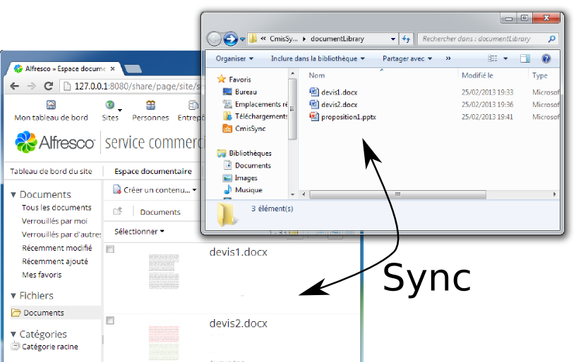
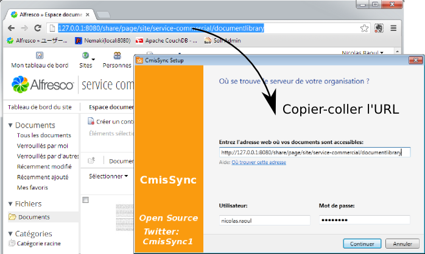

CmisSync vous permet de synchroniser le serveur Alfresco de votre entreprise avec votre ordinateur local, et de lire/modifier vos documents même hors-ligne:
Étape 1
Installez .NET, puis CmisSync.
Étape 2
Lancez CmisSync.
Après quelques écrans de bienvenue, CmisSync tourne sous forme d'une icone dans la barre des tâches:
Cliquez sur l'icone et choisissez "Ajouter un dossier distant...".
Étape 3
Une fenêtre apparaît. Dans le champ du milieu, copiez-collez l'adresse de votre serveur Alfresco, c'est l'adresse que vous utilisez pour accéder à l'interface web de Alfresco:
Insérez le préfixe https:// si il a disparu lors du copier-coller. Entrez ensuite votre nom d'utilisateur et mot de passe Alfresco.
Étape 4
L'écran suivant montre les répertoires d'Alfresco.
Choisissez le répertoire que vous voulez synchroniser.
Si vous utilisez Alfresco Share (comme la plupart des entreprises), cliquez "Sites", sélectionnez votre site, puis cliquez sur "documentLibrary":
Et voilà !
Désormais CmisSync synchronise Alfresco avec votre PC, automatiquement.
CmisSync est bidirectionnel, vous pouvez ajouter/modifier/supprimer des fichiers/répertoires.
Si un conflit venait à arriver (en pratique ça n'arrive presque jamais), vous pouvez choisir quelle version garder, et une sauvegarde est faite.
- Synchronisez n'importe quel contenu Alfresco, pas seulement ce qui se trouve dans un site Alfresco Share
- Basé sur CMIS, un protocole plus moderne et efficient que WebDAV
- Releases fréquentes basées sur le feedback des utilisateurs
- Open Source (volontaires bienvenus!)